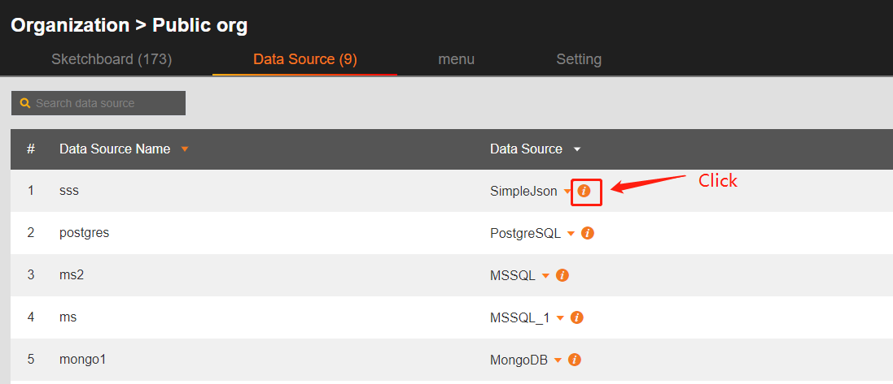

General
如何設定物件(Node)的 tag及取得物件

在物件屬性中進行設定 Tag. 若設定為 tag_name.
dataModel.getDataByTag('tag_name')
取得 Node data 的方式除了透過 tag 之外，在事件傳入的 "data"，也可直接獲取當前 Node Data。

如何取的GraphView物件
In 2D page (display.html) : graphView
In 3D page (scene.html) : g3d
In Overlay page (sceneAndDisplay.html) : graphView or g3d
Or
commonViewUtil.getFileObjByFileName(dataRefreshUtil.currentFile).graphView
或是在每個事件 function 中傳入的 "gv"、"view"
使用疊加層時盡量使用事件函數傳入的 graphview.
如何取的圖紙、場景dataModel
In 2D page (display.html) : dataModel
In 3D page (scene.html) : dataModel
In Overlay page (sceneAndDisplay.html) : dataModel
Or
commonViewUtil.getFileObjByFileName(dataRefreshUtil.currentFile).dataModel
或是在每個事件 function 中傳入的 "dm"
或是從 graphview 物件下使用 graphview.dm()
使用疊加層時盡量使用事件函數傳入的 graphview 或是 dm.
物件屬性改值
可透過 dataModel.getDataByTag('tag_name') 取得物件，物件屬姓分為 property(p), style(s), attribute(a)，
使用以下取的當前值：
dataModel.getDataByTag('tagName').s('style_name')
dataModel.getDataByTag('tagName').a('attribute_name')
dataModel.getDataByTag('tagName')[ht.Default.getter('property_name')]();
使用以下設定當前值：
dataModel.getDataByTag('tagName').s('style_name', value)
dataModel.getDataByTag('tagName').a('attribute_name', value)
dataModel.getDataByTag('tagName')[ht.Default.getter('property_name')](value);
物件(圖標)動態添加
物件動態添加事件
SVG顯示錯誤
SVG 中的內容如果不是向量圖形，而是 `image` 這種多png組成的， 在添加入HT編輯器時可能會出現無法顯示，進入到瀏覽模式時會看不見這張 svg。 此時請直接使用 png 進行貼圖。
導出匯出場景、圖紙時，失敗
1. 如果只有特定圖紙無法匯出，可能是圖紙上物件中含有亂碼造成無法解析，請找出並移除該物件。
2. 如果是所有圖紙均無法匯出，可能是部屬空間資源不足。需要請平台調整部屬資源。
元素屬性變化事件監聽器
Viewer 數據綁定相關資訊，含request、response

HTML DOM元素和 canvas上的繪制圖形是兩個不同的層，它們無法交錯層疊。
腳本語法僅支持：javascript
頁面完全使用標準html, javascript語法，依瀏覽器支援進行渲染。
所有的開發技術請參考Javascript前端網頁進行學習。
透過生成json產生圖紙及數據綁訂

可將相關物件配置完成後，複製右下角的數據進行查看各屬性資訊。
依json格式生成新的json即可。
資料綁定 Set Match，設定顏色不要用Direct feed
Direct feed 的功能是為了快速處理 0,1 與 true, false 對應使用
0 => false
1 => true
勾選 direct feed 則不需額外配置 treu, false
不同 view HTML 頁面功能對應
| HTML | 功能 | 說明 |
|---|---|---|
| display.html | 2D 顯示 | 2D 預設預覽 |
| scene.html | 3D 顯示 | 3D 預設預覽 |
| sceneAndDisplay.html | 2D & 3D 疊加層顯示 | 預設預覽、選單開啟疊加層 |
| view.html | 2D 或 3D 顯示 | 選單預設，未開啟疊加層 |
非數值型屬性綁定數據或動態填資料
以下拉選單為例，需要的格式是 (label, value) 陣列資料。
可透過 script 動態填入相同格式的 json，達到動態換資料。
即可透過 fetch, XMLHttpRequest 等方式動態改動下拉選單內容
不支持變量的數據源動態切換綁訂數據
1. 在 Userdefined 的數據綁定中，預先定義可能會使用到被切換的數據，以便在取值時會預先讀取。
2. 在綁定的數據的彈窗屬性裡修改"id"，在標簽頁 Information > id。本例中修改為 test_change
3. 修改物件綁定的數據物件：
修改 dataRefreshUtil.filesMap 中的 collectSource，找到對應物件的 ***target*** 並進行修改。
注意：不同數據源的 targets 物件格式可能不同，請依照個數據源參數進行改寫。
target物件中的必要欄位：
- sourceType
- formatType
- scDataType
- target


數據源的 datasourcetype 取得

在 Data source 列表中，點擊 "i" 會自動複製 datasourcetype。
這個名稱是數據源唯一識別 "id" 。
※ datasourceName 則是用戶自定義的名稱
Assets目錄支援格式
媒體類型：
- png
- gif
- jpg
- jpeg
- svg
- mp3
- mp4
- dxf
- obj
- mtl
- 3ds
- bin
- fbx
- hdr
- gltf
- glb
文字類型：
- json
- cob
- htb
- js
- css
- html
- htm
2D
2D map、video 等，與繪制圖形是兩個不同的層，它們無法交錯層疊。
2D 事件無法觸發
2D 整合Echart第三方擴充套件
第三方圖形可以參考: Echart Demo

在設定頁引入第三方套件。
https://cdn.jsdelivr.net/npm/echarts-liquidfill@3/dist/echarts-liquidfill.min.js

新建圖標，並且在Render HTML撰寫相關引用 Echart 的代碼，及設定可數據綁定的參數
在圖指引用之後即可在預覽時呈現。
需要注意 Echart 是使用獨立的 HTML 元件，不可與繪製的圖進行交錯排列。
3D
圖紙步進距離設定
3D 貼皮重複 UV
要正確貼皮，圖片大小有限制， 贴图大小要是2的n次方，如: 128 * 256
3D 場景優化
場景可以從以下幾個方面優化：
1、讓設計師輕量化模型，對模型進行減面，不必要的細節不要精細建模，使用貼圖代替，ht的3d場景模型總面數不建議超過 200 萬面。
2、做批量優化：https://www.hightopo.com/guide/guide/core/batch/ht-batch-guide.html
3、節點做矢量緩存 node.s('texture.cache',true)
3D 模型簡化
Web 上撐不住那麽大模型，哪怕純裸寫 WebGL 繪制三角面極限也就在哪里，這種情況有幾條路：
1、簡化模型，這是最有效的，我們大部分外包的項目模型都會重新設計
2、業務分級，例如數據中心，打開機櫃再顯示里面的服務器和端口細節
3、算法上簡模的定制化
官網例子的模型基本都沒超過 10m，單個設備一般構建在 m 以內，甚至小到幾10k，定位的大部分還是運維的系統，用戶只需要看得清是個什麽樣的設備即可。
所以大部分情況下，用戶說有模型可以給我們用的項目，一般都可以直接告訴客戶，現有的模型只能做參考，
大部分情況下我們需要重新建模，因為用戶手頭的模型基本都是 SolidWorks 之類的工程建模模型，是非常精確的為了可制造生產的建模精度，但作為運維一般會極大的簡化建模。
3D obj模型大小超過20m，如何壓縮呢？
模型的大小是由模型的面數控制的，面數和模型大小成正比，需要設計師在建模軟件中對模型進行減面處理。
3D 調適訊息，效能資訊顯示
3D 如何複製內建obj模型進行修改。
開啟模型，依照模型路徑至assets目錄下將檔案匯出即可進行修改。
修改完成之後，請重新建立新的Model。
對應的貼皮圖檔紀錄在mtl檔中，需先下載後再找對應的檔案。
3D FBX 模型動態置換材質。

一般方式如果要置換模型材質需要動態產生模型，給予材質，並在場景上取代舊模型
比較簡易的方式是針對 Node 進行屬性替換，針對 matDef 屬性修改。
matDef 中的 key 值為 fbx 內部定義。
Overlay
取得各層 graphview 或 dataModel
Data surce plugin
sourceFormPane 使用一般 html 設計
例如添加連結 a
dataBindingUI ，使用 input & datalist 做測點下拉篩選功能
applyDataBindingUI 時需要將對應的值讀取返回到 target 物件下存取。